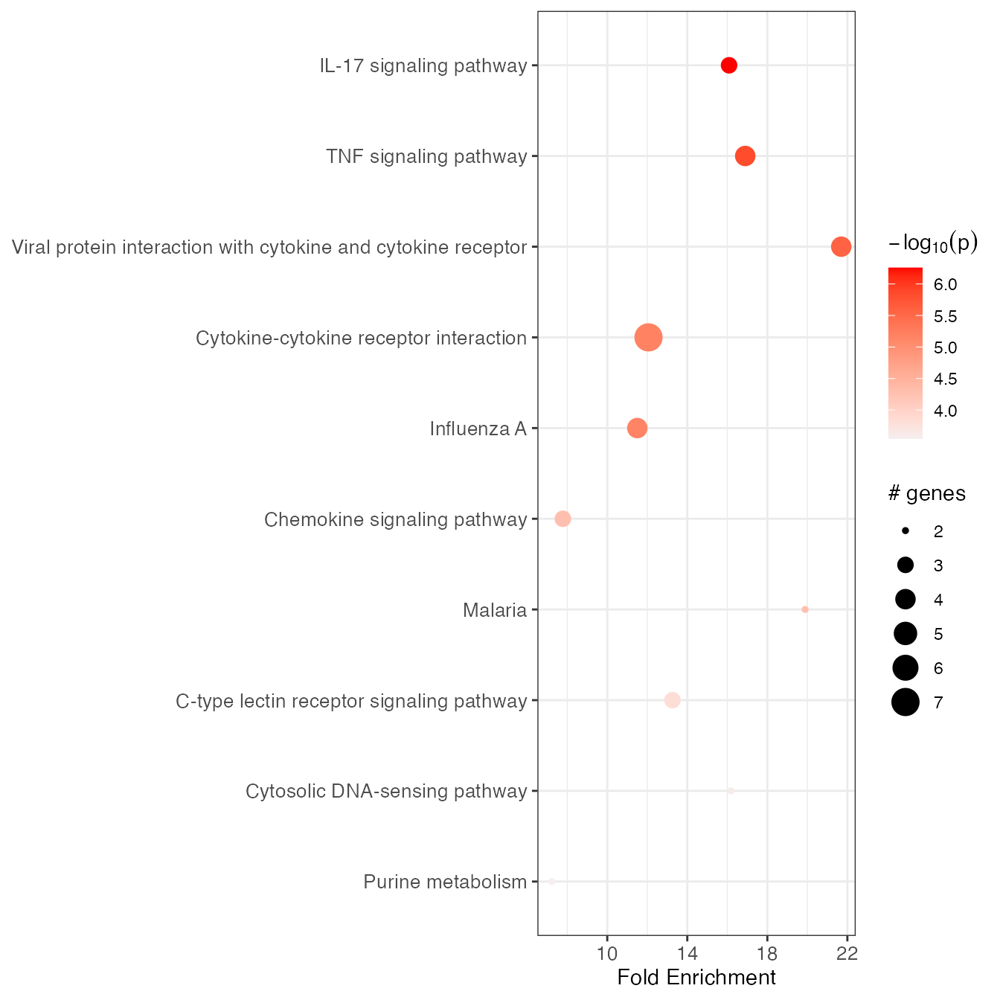

vignettes/non_hs_analysis.Rmd
non_hs_analysis.RmdAs mentioned in the vignette Introduction to pathfindR, enrichment analysis with pathfindR is not limited to the built-in data. The users are able to utilize custom protein-protein interaction networks (PINs) as well as custom gene sets. These abilities to use custom data naturally allow for performing pathfindR analysis on non-Homo-sapiens input data. In this vignette, we’ll try to provide an overview of how pathfindR analysis using Mus musculus data can be performed.
As of v1.5, pathfindR offers utility functions for obtaining organism-specific PIN data and organism-specific gene sets data via
get_pin_file()andget_gene_sets_list(), respectively. See the vignette Obtaining PIN and Gene Sets Data for detailed information on how to gather PIN and gene sets data (for any organism of your choice) for use with pathfindR.
For performing non-human active-subnetwork-oriented enrichment analysis, the user needs the following resources:
After obtaining and processing these data for use, the user can run pathfindR using custom parameters.
Important Note: Because the non-human organism-specific PIN will likely contain less interactions than the Homo sapiens PIN, pathfindR may result in less (or even no) enriched terms.
We can obtain the up-to-date M.musculus (KEGG identifier: mmu) KEGG Pathway Gene Sets using the function get_gene_sets_list():
If using another organism, all you have to do is to replace “mmu” with the KEGG organism code in the related arguments in this vignette.
gsets_list <- get_gene_sets_list(source = "KEGG",
org_code = "mmu")This returns a list containing 2 objects named: gene_sets containing sets of genes of each pathway and desriptions containing the description of each pathway.
The M.musculus KEGG gene set data mmu_kegg_genes and mmu_kegg_descriptions are already provided in pathfindR. For other organisms, the user may wish to save the data as RDS files for future use:
mmu_kegg_genes <- gsets_list$gene_sets
mmu_kegg_descriptions <- gsets_list$descriptions
## Save both as RDS files for later use
saveRDS(mmu_kegg_genes, "mmu_kegg_genes.RDS")
saveRDS(mmu_kegg_descriptions, "mmu_kegg_descriptions.RDS")These can be later loaded via:
mmu_kegg_genes <- readRDS("mmu_kegg_genes.RDS")
mmu_kegg_descriptions <- readRDS("mmu_kegg_descriptions.RDS")The function
get_gene_sets_list()can also be used to obtain gene sets data from other sources. See the vignette Obtaining PIN and Gene Sets Data for more detail.
You may use the function get_pin_file() to obtain organism-specific BioGRID PIN data (see the vignette Obtaining PIN and Gene Sets Data)
Note that BioGRID PINs are smaller for non-H.sapiens organisms and this, in turn, results in less or no significantly enriched terms with pathfindR analysis.
Here, we demonstrate obtaining the organism-specific protein-protein interaction network (PIN) from STRING. You may choose the organism of your choice and find the PIN on the downloads page with the description “protein network data (scored links between proteins)”. When processing, we recommend filtering the interactions using a link score threshold (e.g. 800).
Regardless of the resource, the raw PIN data should be processed to a SIF file, each interactor should be specified with their gene symbols. The first 3 interactions from an example SIF file is provided below:
| C2cd2 | pp | Ints2 |
| Apob | pp | Gpt |
| B4galnt1 | pp | Mettl1 |
Notice there are no headers and each line contains an interaction in the form GeneA pp GeneB, separated by tab (i.e. \t) with no row names and no column names.
Below we download process the STRING PIN for use with pathfindR:
## Downloading the STRING PIN file to tempdir
url <- "https://stringdb-static.org/download/protein.links.v11.0/10090.protein.links.v11.0.txt.gz"
path2file <- file.path(tempdir(check = TRUE), "STRING.txt.gz")
download.file(url, path2file)
## read STRING pin file
mmu_string_df <- read.table(path2file, header = TRUE)
## filter using combined_score cut-off value of 800
mmu_string_df <- mmu_string_df[mmu_string_df$combined_score >= 800, ]
## fix ids
mmu_string_pin <- data.frame(Interactor_A = sub("^10090\\.", "", mmu_string_df$protein1),
Interactor_B = sub("^10090\\.", "", mmu_string_df$protein2))
head(mmu_string_pin, 2)| Interactor_A | Interactor_B |
|---|---|
| ENSMUSP00000000001 | ENSMUSP00000017460 |
| ENSMUSP00000000001 | ENSMUSP00000039107 |
Since the interactors are Ensembl peptide IDs, we’ll need to convert them to MGI symbols for use with pathfindR. This can be achieved via biomaRt or any other conversion method you prefer:
library(biomaRt)
mmu_ensembl <- useMart("ensembl", dataset = "mmusculus_gene_ensembl")
converted <- getBM(attributes = c("ensembl_peptide_id", "mgi_symbol"),
filters = "ensembl_peptide_id",
values = unique(unlist(mmu_string_pin)),
mart = mmu_ensembl)
mmu_string_pin$Interactor_A <- converted$mgi_symbol[match(mmu_string_pin$Interactor_A, converted$ensembl_peptide_id)]
mmu_string_pin$Interactor_B <- converted$mgi_symbol[match(mmu_string_pin$Interactor_B, converted$ensembl_peptide_id)]
mmu_string_pin <- mmu_string_pin[!is.na(mmu_string_pin$Interactor_A) & !is.na(mmu_string_pin$Interactor_B), ]
mmu_string_pin <- mmu_string_pin[mmu_string_pin$Interactor_A != "" & mmu_string_pin$Interactor_B != "", ]
head(mmu_string_pin, 2)| Interactor_A | Interactor_B |
|---|---|
| Gnai3 | Ppy |
| Gnai3 | Ccr3 |
Next, we remove self interactions and any duplicated interactions, format the data frame as SIF:
# remove self interactions
self_intr_cond <- mmu_string_pin$Interactor_A == mmu_string_pin$Interactor_B
mmu_string_pin <- mmu_string_pin[!self_intr_cond, ]
# remove duplicated inteactions (including symmetric ones)
mmu_string_pin <- unique(t(apply(mmu_string_pin, 1, sort))) # this will return a matrix object
mmu_string_pin <- data.frame(A = mmu_string_pin[, 1],
pp = "pp",
B = mmu_string_pin[, 2])Finally, we save the gene symbol PIN as a SIF file named “mmusculusPIN.sif” under the temporary directory (i.e. tempdir()):
path2SIF <- file.path(tempdir(), "mmusculusPIN.sif")
write.table(mmu_string_pin,
file = path2SIF,
col.names = FALSE,
row.names = FALSE,
sep = "\t",
quote = FALSE)
path2SIF <- normalizePath(path2SIF)We’ll use this path to the custom sif for analysis with run_pathfindR().
The STRING Mus musculus PIN created above is available in pathfindR and can be used via setting
pin_name_path = "mmu_STRING"inrun_pathfindR().
The data used in this vignette (myeloma_input) is the data frame of differentially-expressed genes along for the GEO dataset GSE99393. The RNA microarray experiment was perform to detail the global program of gene expression underlying polarization of myeloma-associated macrophages by CSF1R antibody treatment. The samples are 6 murine bone marrow derived macrophages co-cultured with myeloma cells (myeloma-associated macrophages), 3 of which were treated with CSF1R antibody (treatment group) and the rest were treated with control IgG antibody (control group). In myeloma_input, 45 differentially-expressed genes with |logFC| >= 2 and FDR <= 0.05 are presented.
| Gene_Symbol | FDR |
|---|---|
| Aoah | 8.23e-05 |
| AW112010 | 8.23e-05 |
| F13a1 | 8.23e-05 |
| Pde3b | 8.23e-05 |
| P2ry14 | 8.23e-05 |
| Fcgrt | 8.23e-05 |
run_pathfindR()
After obtaining the necessary PIN and gene sets data, you can then perform pathfindR analysis by setting these arguments: - convert2alias = FALSE: alias conversion only works on H.sapiens genes - pin_name_path = path2SIF: as we’re using a non-built-in PIN, we need to provide the path to the mmu sif file - gene_sets = "Custom: as we’re using a non-built-in source for gene sets - custom_genes = mmu_kegg_genes - custom_descriptions = mmu_kegg_descriptions
myeloma_output <- run_pathfindR(input = myeloma_input,
convert2alias = FALSE,
gene_sets = "Custom",
custom_genes = mmu_kegg_genes,
custom_descriptions = mmu_kegg_descriptions,
pin_name_path = path2SIF)
knitr::kable(myeloma_output)| ID | Term_Description | Fold_Enrichment | occurrence | support | lowest_p | highest_p | Up_regulated | Down_regulated |
|---|---|---|---|---|---|---|---|---|
| mmu04060 | Cytokine-cytokine receptor interaction | 12.061372 | 1 | 0.1666667 | 0.0000066 | 0.0000066 | Ccl8, Ccl12, Cxcl10, Il15, Il1b, Tnfsf10, Lifr | |
| mmu04668 | TNF signaling pathway | 16.895070 | 1 | 0.1666667 | 0.0000217 | 0.0000217 | Ccl12, Cxcl10, Il1b, Il15 | |
| mmu04625 | C-type lectin receptor signaling pathway | 13.257936 | 1 | 0.0833333 | 0.0001550 | 0.0001550 | Il1b, Clec4n, Clec4e | |
| mmu00230 | Purine metabolism | 7.231602 | 1 | 0.0833333 | 0.0002845 | 0.0002845 | Gda, Pde3b | |
| mmu04217 | Necroptosis | 6.867420 | 1 | 0.0833333 | 0.0003326 | 0.0003326 | Il1b, Tnfsf10 | |
| mmu04623 | Cytosolic DNA-sensing pathway | 16.179177 | 1 | 0.0833333 | 0.0004891 | 0.0004891 | Cxcl10, Il1b | |
| mmu05164 | Influenza A | 11.500861 | 1 | 0.2500000 | 0.0005685 | 0.0005685 | Il1b, Ccl12, Cxcl10, Tnfsf10 | |
| mmu05132 | Salmonella infection | 4.481556 | 1 | 0.0833333 | 0.0012058 | 0.0012058 | Il1b, Tnfsf10 | |
| mmu05323 | Rheumatoid arthritis | 16.649502 | 1 | 0.1666667 | 0.0015326 | 0.0015326 | Il15, Il1b, Ccl12 | |
| mmu04657 | IL-17 signaling pathway | 16.088282 | 1 | 0.2500000 | 0.0016999 | 0.0016999 | Cxcl10, Ccl12, Il1b | |
| mmu04620 | Toll-like receptor signaling pathway | 9.740525 | 1 | 0.1666667 | 0.0022732 | 0.0022732 | Il1b, Cxcl10 | |
| mmu00760 | Nicotinate and nicotinamide metabolism | 12.238095 | 1 | 0.0833333 | 0.0075047 | 0.0075047 | Art2b | |
| mmu04630 | JAK-STAT signaling pathway | 5.785281 | 1 | 0.0833333 | 0.0108629 | 0.0108629 | Il15, Lifr | |
| mmu05134 | Legionellosis | 8.089588 | 1 | 0.0833333 | 0.0173113 | 0.0173113 | Il1b | |
| mmu04621 | NOD-like receptor signaling pathway | 11.431993 | 1 | 0.0833333 | 0.0195262 | 0.0195262 | Il1b, Ccl12, Gbp2, Gbp7 | |
| mmu05143 | African trypanosomiasis | 13.636735 | 1 | 0.0833333 | 0.0299877 | 0.0299877 | Il1b | |
| mmu04012 | ErbB signaling pathway | 5.820557 | 1 | 0.1666667 | 0.0335621 | 0.0335621 | Nrg1 | |
| mmu04672 | Intestinal immune network for IgA production | 11.363946 | 1 | 0.0833333 | 0.0433333 | 0.0433333 | Il15 |
Because we used a very strict cut-off (logFC >= 2 + FDR <= 0.05), there were only 18 enriched KEGG pathways. However, the pathways identified here are significantly related to the pathways identified in the original publication by Wang et al.1.
As aforementioned, for Mus musculus (only), we have provided the necessary PIN (mmu_STRING) and gene set data (mmu_KEGG) so you can also run:
myeloma_output <- run_pathfindR(input = myeloma_input,
convert2alias = FALSE,
gene_sets = "mmu_KEGG",
pin_name_path = "mmu_STRING")Wang Q, Lu Y, Li R, et al. Therapeutic effects of CSF1R-blocking antibodies in multiple myeloma. Leukemia. 2018;32(1):176-183.↩︎